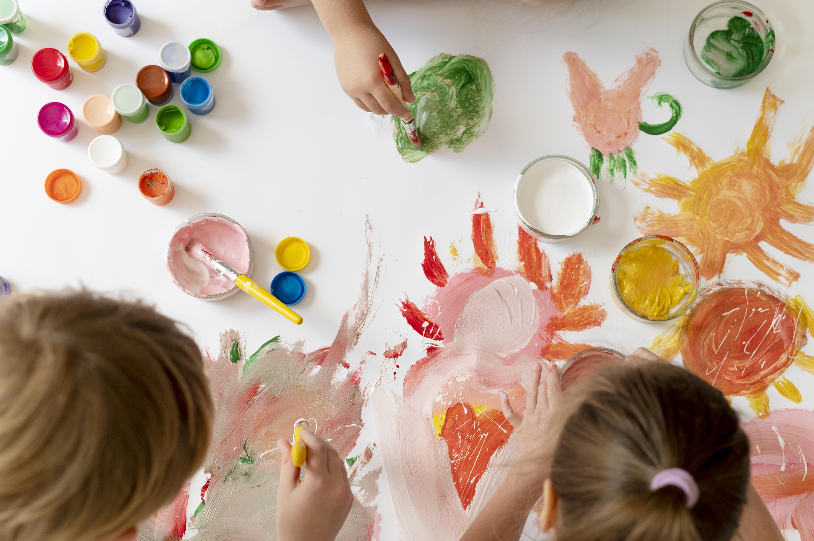
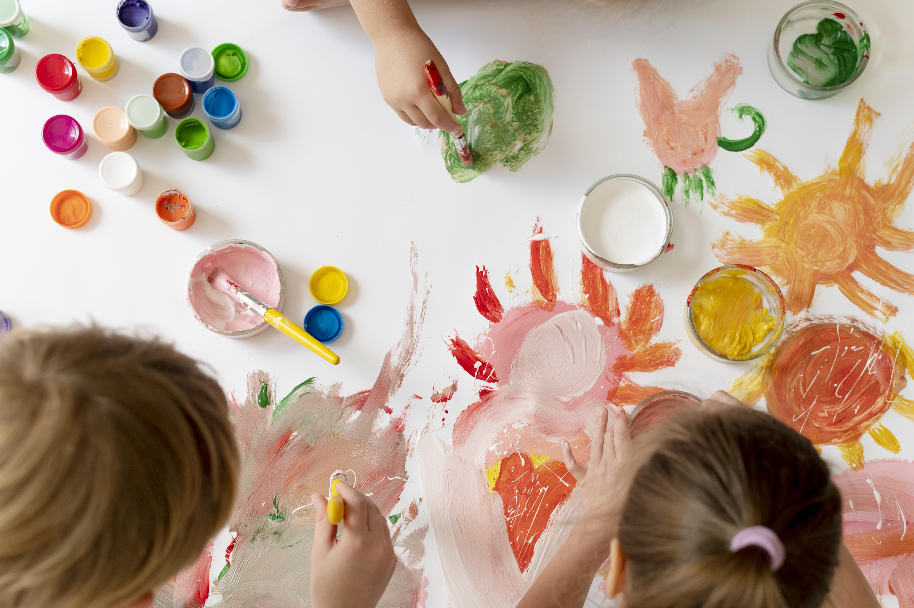

Notre missions !
Animation scolaire est votre destination idéale pour des activités scolaires divertissantes et instructives. Nous proposons une large gamme de thèmes allant de l'histoire et la science aux arts et à la technologie, permettant aux élèves de plonger dans des sujets qui les passionnent. En parcourant notre site, les élèves ont la possibilité de découvrir et de s'inscrire à des activités en fonction de leurs intérêts et de leurs préférences. Que ce soit la création de dessins animés, l'exploration de l'univers à travers des simulations interactives ou la découverte de l'histoire à travers des jeux de rôle, il y en a pour tous les goûts et tous les niveaux.
 

À travers Animation scolaire, nous aspirons à créer un espace où les élèves peuvent non seulement acquérir des connaissances académiques, mais aussi développer des compétences essentielles telles que la pensée critique, la collaboration et la résolution de problèmes. Notre équipe croit fermement que chaque enfant a le potentiel de réaliser de grandes choses, et nous nous engageons à les soutenir dans leur parcours d'apprentissage. Nous croyons en un apprentissage centré sur l'élève, où chaque individu est encouragé à explorer, à expérimenter et à découvrir le monde qui l'entoure à travers des activités stimulantes et engageantes. Avec notre engagement envers l'excellence éducative et notre passion pour l'innovation, nous nous efforçons de créer une expérience d'apprentissage inoubliable pour chaque utilisateur de notre plateforme.
Notre engagement envers la positivité se manifeste à travers
Des activités motivantes : Nous proposons des activités qui captivent l'attention et suscitent l'intérêt des élèves, les encourageant ainsi à s'investir pleinement dans leur apprentissage.
Un environnement bienveillant : Nous encourageons une atmosphère de respect, de collaboration et d'acceptation où chaque élève se sent en sécurité pour exprimer ses idées, poser des questions et faire des erreurs.
Un renforcement de la confiance en soi : En valorisant les progrès et les réussites de chaque élève, nous contribuons à renforcer leur confiance en eux et à les encourager à poursuivre leurs objectifs académiques et personnels.